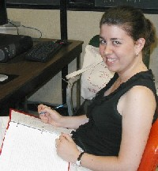

Research Seminars are the most important portion of the SUMSRI
program. Professional mathematicians and statisticians contribute problems
and lead seminars. At least one of the seminar leaders is African American;
the other two are Miami faculty from either the Department of Mathematics
and Statistics or the Department of Systems Analysis. Before arriving in
Oxford, the students are mailed a card listing each seminar area and prerequisites.
They are asked to rank the topics and return the card. They are then assigned
an area based on their choice. We hope to give each person his or her first
choice, but this is not always possible. During the first four weeks of
the program, each seminar director presents a series of lectures to the
seminar participants in their area of expertise and assign research problems.
These problems are challenging and at the same time easy enough for a very
good undergraduate student to get partial results. Each student chooses
a problem to work on and consults the appropriate professional. The seminar
leaders are asked to meet with their students every day except Friday during
the first four weeks and at least twice a week during the last three weeks.
We strongly encourage students to work in groups. At the end of the program,
the students give an oral presentation on their results and write a paper.
These papers are included in an online journal published by the Institute.
Selected Papers

|
A Multivariate Statistical
Analysis of Stock Trends by James Lawrence, Miami University
and April Kerby, Alma College. Is there a method to predict the stock market? What factors determine if a company’s stock value will rise or fall in a given year? Using the multivariate statistical methods of principal component analysis and discriminant analysis, we aim to determine an accurate method for classifying a company’s stock as a good or a poor investment choice. Additionally, we will explore the possibilities for reducing the dimensionality of a complex financial and economic dataset while maintaining the ability to account for a high percentage of the overall variation in the data. |
| A Multivariate Statistical
Analysis of the NBA by Lori Hoffman, University of Wisconsin,
River Falls and Maria Joseph, Kentucky State University. Will your favorite National Basketball Association (NBA) team make it to the playoffs this year? What variables affect a team’s postseason outcome? In an attempt to determine which teams will make the NBA playoffs, we will collect and analyze team data using multivariate statistical methods including Principal Components Analysis and Discriminant Analysis. |

|

by Maya Johnson, Lincoln University and Nancy Rodriguez, University of San Diego. In this paper we rediscover the 17 wallpaper groups first classified by Fedorov and Schönflies. We explore all lattices and determine their possible point groups. The point groups then enable us to classify each distinct wallpaper group. |

by Lisa Marie Bush, Columbia College In this paper, we further Doris Schattschneider’s work on kaleidocycles, which are three-dimensional rings made from chains of 2n regular tetrahedra attached at edges. We show that the symmetry group of a kaleidocycle is $D_n \oplus Z_2 \oplus Z_2$. In addition, we extend kaleidocycles to cubeocycles (pronounced “cube-o-cycles”), three-dimensional rings made from chains of 2n cubes attached at antipodal vertices, and show that the symmetry group of a cubeocycle is $D_n \oplus Z_2 \oplus D_3$ . |
| Escher Tilings and Ribbons:
A Mathematical Look by Kelli Hall, Marshall University. Using combinatorial methods, M.C. Escher created repeating patterns of tilings with decorated squares, hoping to find every possible pattern. In this paper, we will give an algebraic proof for his pictorial findings and then extend our mathematical approach to a few cases that involve ribbons. |

|

|
The Continuum Hypothesis
is True...for all Practical Purposes by Sarah Horton, Stephen
F. Austin University, Alicia Richardson, Morgan State University, Natalie
Scala, John Carroll University, Andrea Watkins, Howard University. Let G be a countable subset of the real numbers. It is shown that if G is a closed set, open set, or F_\sigma set, then the cardinality of G is the same as the cardinality of the real numbers. In particular, the Continuum Hypothesis is true for the basic sets in the construction of the Borel sets. |

|